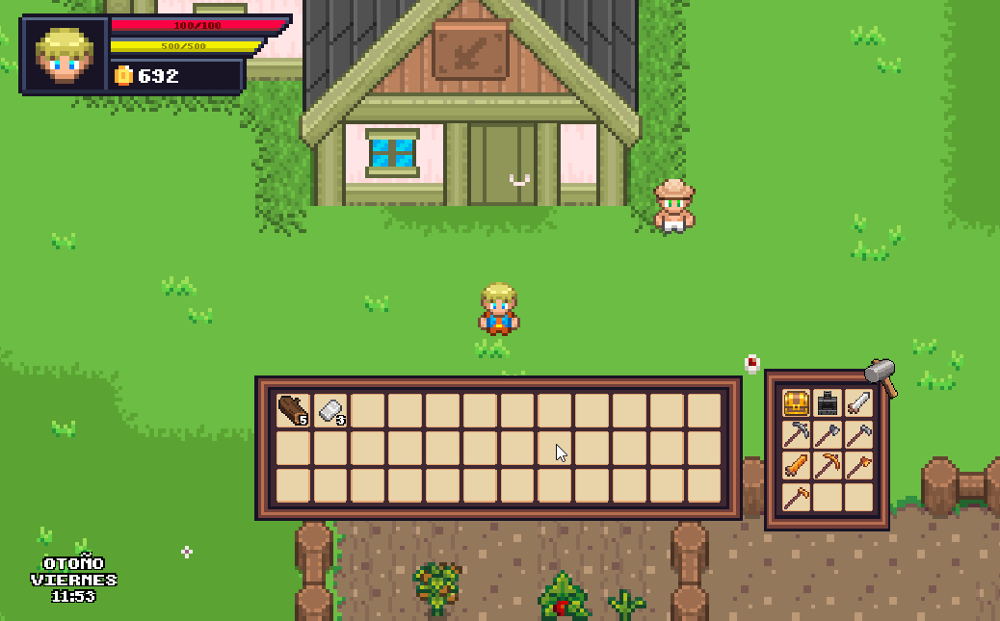
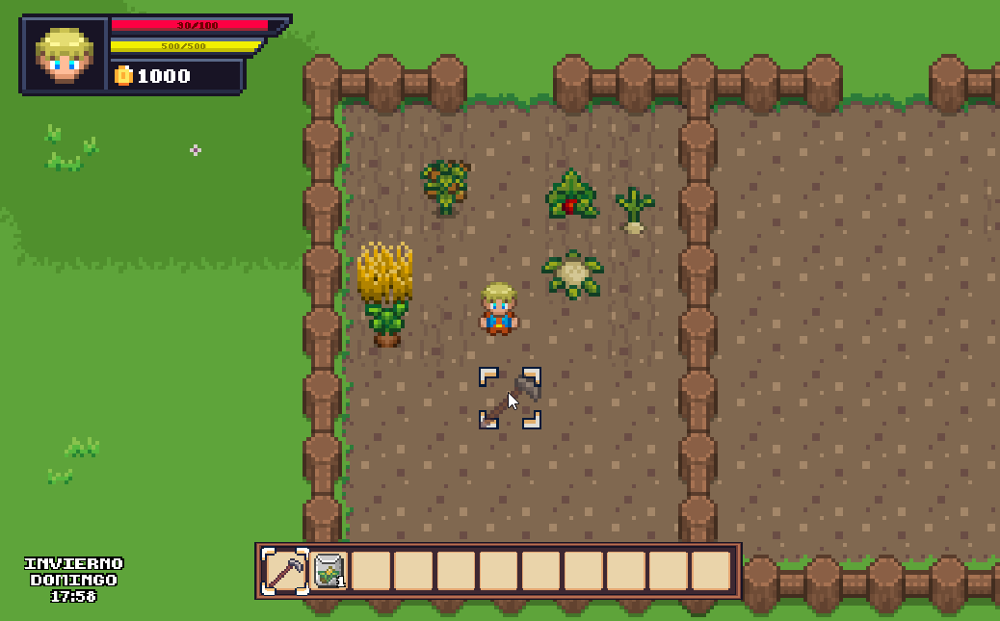
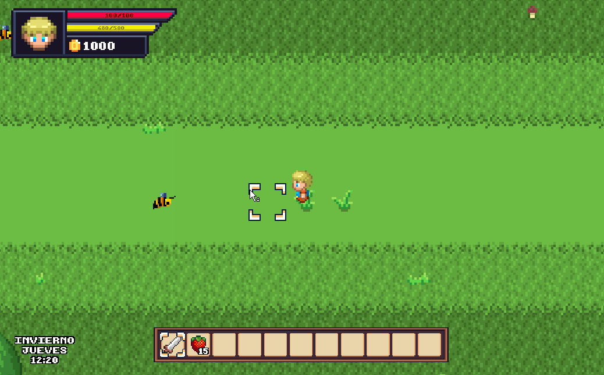
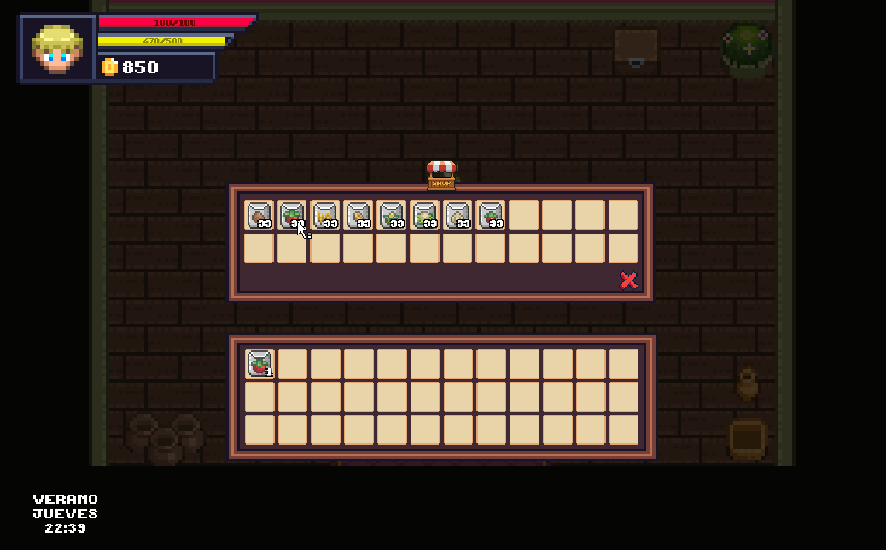
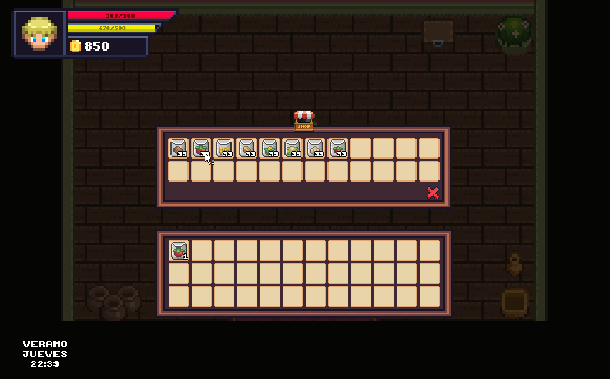
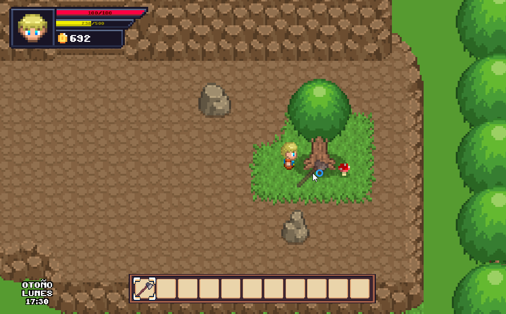
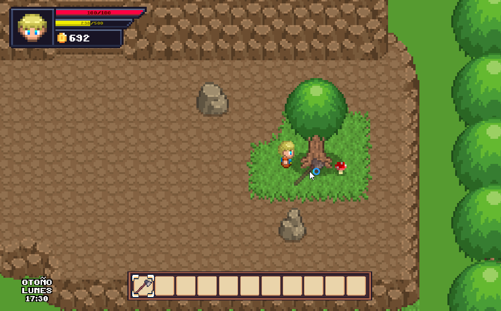
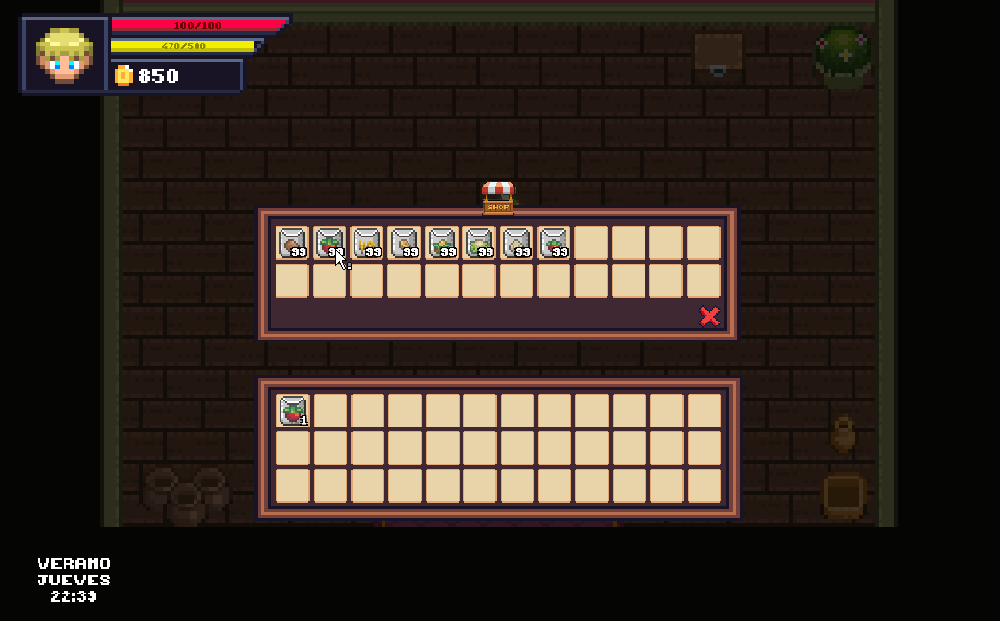
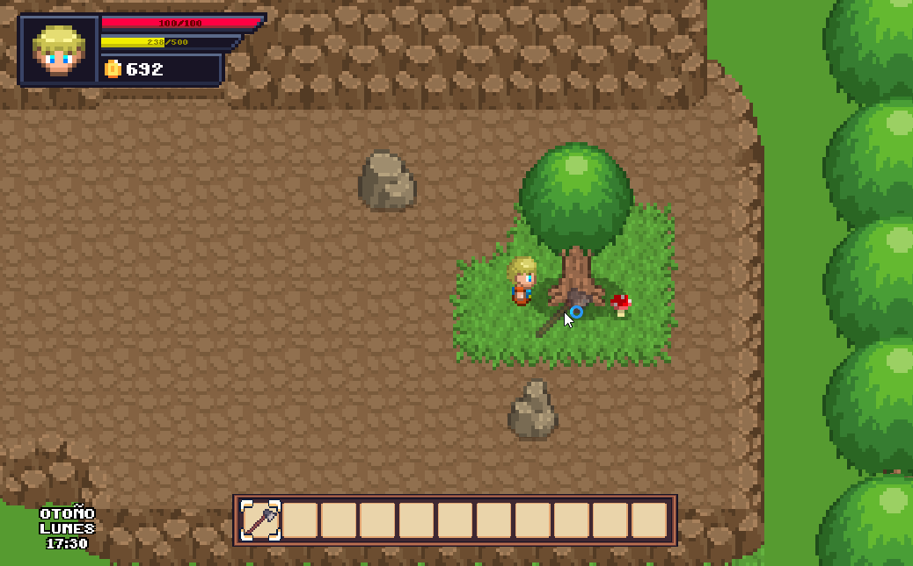

🎮 Características del Juego
- 🌱 Cultivos con crecimiento progresivo
- 🏗️ Colocación de objetos (cofres, hornos, etc.)
- ⚔️ IA de enemigos con ataques
- 🌤️ Sistema de ciclo día/noche
- 🛍️ Tiendas con compra y venta de ítems
📸 Galería de Gameplay



 

 



🔗 Ver en GitHub
Puedes ver el código fuente y más detalles en el repositorio de GitHub.
🔗 Ver en GitHub